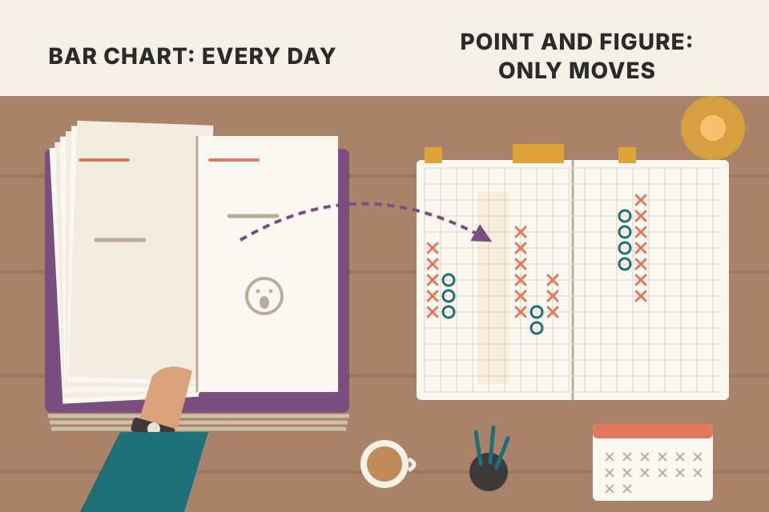
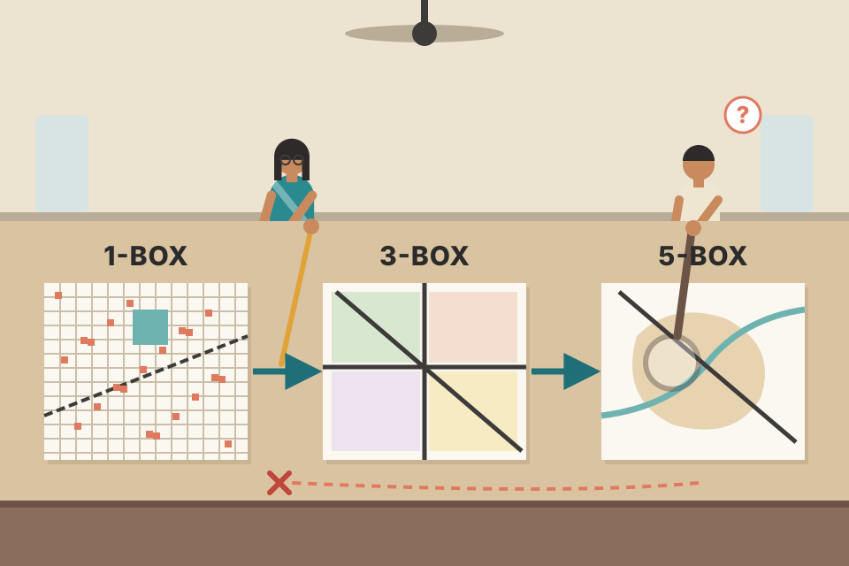
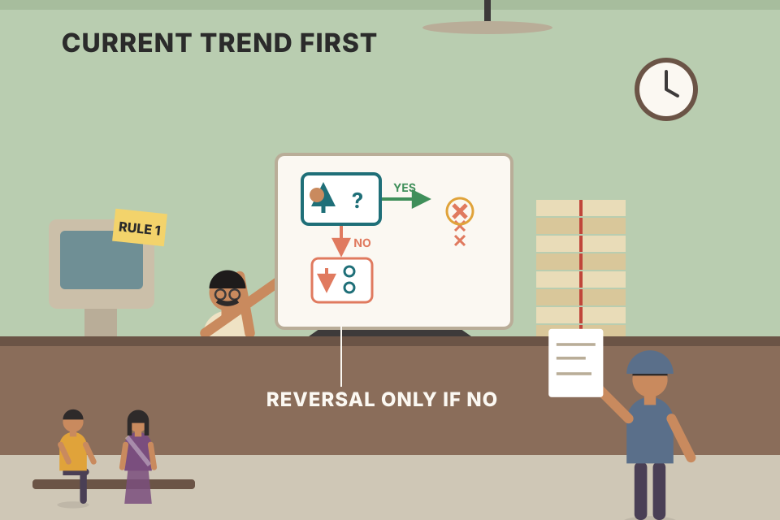
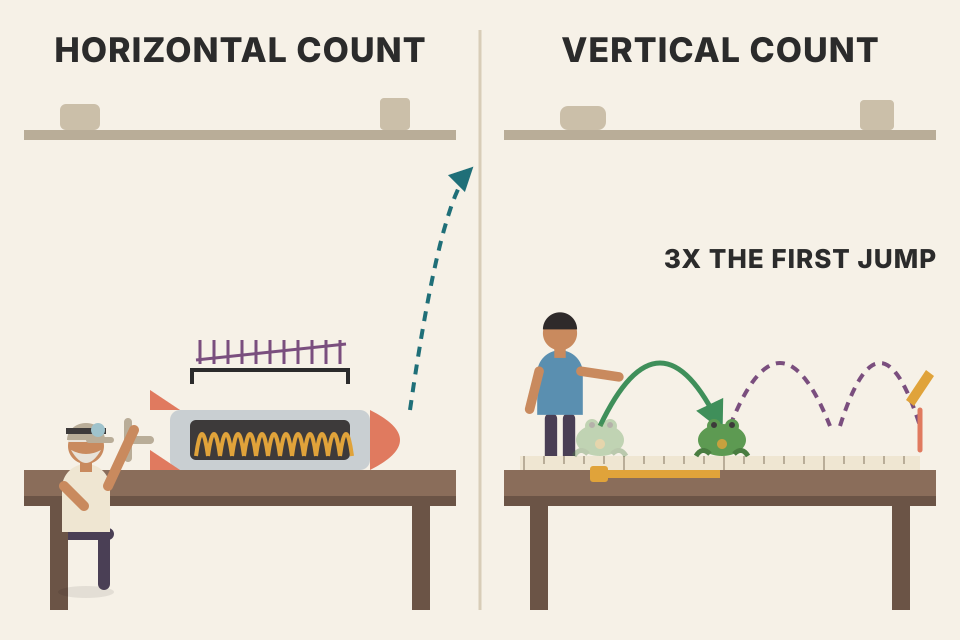

The whole chapter in plain words and in the book's order: the old intraday 1-box method first, then the simpler 3-box reversal chart built from daily highs and lows. Every chart on this page is drawn live from simulated prices by a small point-and-figure engine (the one exception is the "book" option in section 04, which replays the first eight prices of Murphy's own walk-through), so you can change the box size and reversal and watch the columns, signals, counts and trendlines rebuild themselves.
Murphy builds the chapter in two passes. The first pass is the original method that records every intraday move. The second is the condensed 3-box chart that only needs each day's high and low. Both use the same few ideas.
Point and figure (P&F) was the first charting technique stock traders used, before 1900. It has had several names. Murphy's dates:
Murphy then takes two steps, and so does this page: first the original method, which uses every intraday price move (sections 04–08), then a simpler version that needs only each day's high and low (sections 09–20).

A bar chart is a diary with one page per day, written even when nothing happened. A point and figure chart is a diary that only gets a new line when price actually moves by a set amount. Quiet weeks leave no trace; busy days fill a whole page.
Murphy calls the P&F chart "a study of pure price movement". It ignores time:
Figure 11.1 puts a daily bar chart and a P&F chart of the S&P 500 side by side: the same general trend, recorded in a different way.
Faded bars are days whose high and low added no box: the P&F chart simply skipped them. Its horizontal axis counts changes of direction, not days. The grey bars on the right of the P&F chart count the marks in each price row: rows that price kept passing through again and again pile up the most marks. That's the "where did the trading happen" picture Murphy means. (On this simulated daily chart it measures how often price revisited a level; there is no real volume in the simulation.)
vwap_volume_profile_explained.md: a volume profile is a sideways histogram of volume at each price, and high-volume areas are where price struggles to get through. Same question, answered with real volume. Your tests found the POC filter itself added little, so treat busy rows as places to watch, not signals.X columns show rising prices, O columns falling prices, and they alternate. Two breakout rules (Figure 11.2):
These breakouts are much more precise than breakouts on a bar chart, and trend signals are easier to see. The second advantage is flexibility: you can make the same prices look very different with two dials.
Murphy compares the last rally, from 920 to 1060, on all three charts. The 10×3 chart shows it as one column of X's with no O columns. The 5×3 chart breaks it into 5 columns (3 X, 2 O). The 3×3 chart breaks it into 11 columns (6 X, 5 O) and gives 6 different buy signals. More O columns during an uptrend mean more repeat buy signals (for a later entry or for adding to a winner) and more chances to raise the protective sell stop to just below the latest O column (S1–S5 in Figure 11.4). Bottom line: adjust the chart's sensitivity to your own needs.
The box size is the ruler's smallest mark: moves shorter than one box are invisible. The reversal is how hard you must push back before the pen jumps to a new column. Big ruler + big push = a calm sketch of the major trend. Small ruler + small push = a detailed drawing full of little swings.
A new column needs a counter-move of at least box × reversal (here, with a 1-point box and 3-box reversal, a 3-point pullback). Anything smaller is absorbed into the current column. So both dials set one number: the smallest swing the chart is allowed to notice. Shrink it and watch the column count and signal count climb in the readout; every extra O column inside an uptrend is one more step the plum stop line can climb.
Turn each of Murphy's three charts into "the smallest counter-move it can see" = box × reversal:
| Chart | Smallest pullback that starts a new column | As % of a ~1000 level | The 920 → 1060 rally (140 points) drawn as |
|---|---|---|---|
| 10×3 (Fig 11.3) | about 30 points | ≈ 3% | 1 column of X's: no dip inside the rally reached 30 points |
| 5×3 (Fig 11.2) | about 15 points | ≈ 1.5% | 5 columns (3 X, 2 O): two dips were 15+ points |
| 3×3 (Fig 11.4) | about 9 points | ≈ 0.9% | 11 columns (6 X, 5 O): five dips were 9+ points |
The column counts are Murphy's; the thresholds and percentages are just box × 3. Read it backwards and the chart tells you something the bar chart hides: on the 10×3 chart, "one column" is a promise that the rally never gave back 30 points from any high along the way.
A random walk's typical distance from where it started grows with the square root of time: after t days it has wandered about σ·√t. So to cover a swing of h = box × reversal takes roughly (h/σ)² days. Double h and each column takes about 4× as long, so you get about ¼ as many columns. The table runs that experiment: 60 simulated driftless markets of 500 days each (fixed seeds, so it doesn't change when you roll the main market), every box size, average column count.
How to read it: the "÷" column compares each box with the box half its size. Where box × reversal is at least about twice a normal day's high-low range (≈1.3 here), the ratio sits near 4, as the square-root rule predicts. At the smallest boxes it falls well short of 4, because one day's high-low range already spans a full reversal and the daily high/low method can't see swings inside a day (section 09 measures exactly that). Murphy's real chart went from 44 columns to 16 (÷2.75) when the box doubled; a real index isn't a pure random walk and that chart covers a fixed stretch of history, so don't expect an exact 4 (my reading, not Murphy's).
The whole daily method is a two-state machine. This is the core of the engine that draws every chart on this page (it also handles the first column, the 1-box rule and signals):
Murphy shows the dials; modern software adds ways to set the box automatically. TradingView's point & figure chart, for example, can size the box from ATR (average true range) or as a percentage of price, not only as a fixed amount. Worked example (own numbers) for an NSE stock at ₹1,500 with a 14-day ATR of ₹30:
backtest_results_summary.md: the daily breakout test made 13–18%/yr but was no better than holding the same stocks; the swing setup S-1 in intraday_swing_playbook.md is the same breakout family.The intraday chart was the original type and was first used for stocks. The aim was to record on paper every one-point move of each stock, because chartists felt accumulation (buying) and distribution (selling) were easier to spot that way. Only whole numbers were used: each box was worth one point, every one-point move in either direction was recorded, and fractions were mostly ignored. When the method was later used on commodity futures, the box value had to be adjusted to fit each market.
Murphy's example is 9 days of trading in a currency futures contract with a 5-point box and a 1-box reversal. (The text calls it a Swiss franc contract; the caption of Figure 11.5a says Deutsche mark.) The rules from his walk-through:
On a 1-box chart a single box against the trend is already a reversal. Without the 2-mark rule, every one-box wiggle would create a one-box column and the chart would smear sideways. The rule folds those wiggles into one column. One detail from the page: for the fifth column the text says the O goes at 4860, but its own rule (one box down from the 4860 top) and Figure 11.5a both put it at 4855, so this stepper follows the figure. The next price (4870, the first price of 5/2) then fills X's into that same column, because it holds only one mark.
Figure 11.5b redraws the same data as a 3-box reversal chart: condensed, with a lot of data lost. Figure 11.5c is a 5-box reversal. These are the three reversal sizes traditionally used:
The correct order is to build the 1-box chart first; the 3- and 5-box charts can then be built straight from it. You obviously can't rebuild a 1-box chart from a 3- or 5-box chart.

Three maps of the same city: a street map (1-box), a district map (3-box) and a country map (5-box). You can draw the country map from the street map, but no amount of staring at the country map tells you where the streets were.
A bigger reversal is a filter: any pullback smaller than R boxes is swallowed by the current column. The 3- and 5-box charts are built only from the turning points that survive that filter, which is why they can be made from the 1-box chart and not the other way round.
A major advantage of the intraday 1-box chart is the horizontal count for price objectives. Bar-chart objectives are almost all vertical measurements: measure a pattern's height and project it up or down. The head and shoulders, for example, measures from the head to the neckline and projects that distance from the neckline break (Chapter 5).
P&F charts allow horizontal measurement. The premise: there is a direct relationship between the width of a congestion area and the size of the move after the breakout. If the congestion is a base, its width estimates the upside once the base is complete. After the uptrend starts, later congestion areas give further counts that can confirm the first one.
Each column in a base is one more round of buyers and sellers swapping the stock back and forth. The count is a rule of thumb that says the longer that tug-of-war lasted, the further price travels once one side wins.
The sliders start on the simulated base (shaded). The readout finds the row with the most marks inside your column range, counts the columns, and draws the target. Widen the range and the target rises; that's the "wider base, bigger objective" rule. Whether price gets there is not guaranteed: roll a few markets and watch the "reached?" line. Note that this chart starts with a dot and has the mixed X/O columns of a 1-box chart.
Patterns can be read on P&F charts too, and they're much like the bar-chart ones (Chapter 5): mostly variations on double and triple tops and bottoms, head and shoulders, V's and inverted V's, and saucers.
A word that shows up a lot in P&F books is the fulcrum: a well-defined congestion area that forms after a big advance or decline and becomes an accumulation base or a distribution top. In a base, the bottom gets tested again and again, with rally attempts in between; it often looks like a double or triple bottom. The base is complete when a breakout, the catapult, clears the top of the congestion.
Figure 11.7 (from Alexander H. Wheelan, Study Helps in Point and Figure Technique, New York: Morgan, Rogers and Roberts, 1954, p. 25; reprinted in 1990 by Traders Press) names 8 bottoms and 8 tops: fulcrum, compound fulcrum, delayed ending, inverse head & shoulders, V base, V extended, duplex horizontal and saucer, with their mirror-image tops (inverse fulcrum, inverse compound fulcrum, delayed ending, head & shoulders, inverted V, inverted V extended, duplex horizontal, inverse saucer).
These are my own sketches of the shapes Murphy describes, drawn by the engine on scripted 1-box paths (not traced from Figure 11.7). The book shows the other named variants only as pictures, so they aren't redrawn here.
Because a P&F chart drops time, a pattern's width is the number of reversals inside it, not the number of days. That's why the flat fulcrum and saucer give a good horizontal count and the V base gives almost none: the V turns once and never trades sideways.
The patterns in Figure 11.7 include trendlines. On intraday charts, trendline analysis is the same as on bar charts: up trendlines go under successive lows, down trendlines over successive peaks. That is not true of the simplified 3-box chart studied next, which uses 45° lines and draws them differently (section 12).
tori_trendlines_explained.md draws lines through swing points (5-bar pivots), which are confirmed late. The 1-box line here is the same idea on a P&F grid; the 45° line needs no second touch at all.The original 1-box method needed intraday prices. The 3-box reversal was a condensation of it, meant for intermediate trend analysis. Cohen reasoned that 3-box reversals happen so rarely within a single day in stocks that intraday prices weren't needed. So he used only the daily high and low, which every financial newspaper printed. That change, the basis of the Chartcraft service, made P&F much simpler and opened it to the average trader.
The high and low tell you the furthest price went each way, but not the order. That only matters if price both added a box and reversed by 3 boxes on the same day. A 3-box reversal is a big move, so that's rare, and the daily method gives nearly the same chart for a fraction of the work. The next section shows how the order problem is settled by rule.
A daily high and low are two snapshots with the timestamps torn off. You know the furthest price went each way, not which came first. As long as one day can't travel a full reversal, the order never changes the chart, so losing the timestamps costs nothing.
A day is ambiguous when its high would add a box and its low would also be a 3-box reversal (or the mirror in an O column). Only on those days does the missing order matter. The readout counts them over 50 simulated markets (fixed seeds) of the page's trend-and-range type, price ≈ 100, reversal 3. Slide the box down and watch the count jump once a day's range gets close to box × 3.
So Cohen's assumption is a statement about the ratio between a typical day's range and box × reversal, not about 3-box charts as such. On these simulated days (range ≈ 1.3% of price) a 1-point box × 3 makes ambiguous days essentially vanish; a 0.25-point box makes them common. The same check applies to a real market: if one day's range often exceeds box × reversal, you need intraday data or a bigger box.
Scale the chart and give each box a value, as for the intraday chart (Chartcraft subscribers got this done for them). Then each day, using only the high and low:
Figure 11.8 (Chartcraft's "Explanation of Charts", courtesy of Chartcraft, Inc., New Rochelle, NY) is a sample chart with its parts labelled (scale, month, initial buy, and each buy/cover-short and sell/go-short point), followed by the rules of use. My summary of them:
"High first in an X column" settles the order problem from section 09 in favour of the trend: if a day both extends the column and dips 3 boxes, the extension wins and the dip is ignored. Most days do nothing (watch the step counter) because price stayed inside the current box or didn't reverse far enough.

A clerk with a fixed checklist. Before looking at anything else, ask: "does today push the current column further?" Only if the answer is no does the other side of the day get a look. The trend in progress always gets first say.
Start in an X column whose top box is 110. Boxes count only when fully reached: a high of 111.4 reaches box 111; a low of 106.9 reaches box 107.
| Day | High / low | Check | Drawn |
|---|---|---|---|
| 1 | 111.4 / 106.9 | X column: high first. 111 ≥ 110 + 1 → add an X. The low reaches 107 = 110 − 3, a reversal on its own, but it is ignored. | X at 111 |
| 2 | 111.8 / 108.6 | High reaches only 111: no new X. Low reaches 109; a reversal needs 108 (111 − 3). | nothing |
| 3 | 110.9 / 107.9 | No new X. Low reaches 108 = 111 − 3 → reversal. | new column: O at 110, 109, 108 |
| 4 | 111.2 / 106.5 | O column: low first. 107 ≤ 108 − 1 → add an O. The high reaches 111 = 108 + 3, also a reversal on its own, but it's ignored. | O at 107 |
Days 1 and 4 are the ambiguous days from section 09: both sides qualified, and the rule handed each one to the trend already in place. Day 2 is the common case: price moved, the chart didn't.
Figure 11.9 (from K.C. Zieg Jr. and P.J. Kaufman, Point and Figure Commodity Trading Techniques, New Rochelle, NY: Investors Intelligence, p. 73) shows the 16 patterns most common on this kind of chart: 8 buy signals and 8 sell signals. The sell side (S-1 to S-8) is a mirror image of the buy side, so Murphy explains the buys:
Stocks vs commodities. All 16 signals can be used for stocks. Futures move fast, so the complex patterns are less common there and the simple signals carry more weight; many futures traders use the simple signals alone. Waiting for the complex, stronger patterns would miss many profitable trades.
Each sketch is my own: a short list of turning prices run through the same 3-box engine, so every column is a legal 3-box column. Not traced from Figure 11.9. Murphy only says the sell patterns mirror the buy patterns. Judging by the names (my reading, not stated in the book), S-7 mirrors B-8 and S-8 mirrors B-7, so the sketches pair them that way.
On 3-point reversal charts, trendlines are drawn at 45° angles, and they don't have to connect earlier tops or bottoms. The charts are so condensed that connecting rally tops or reaction lows would be impractical.
A ramp laid at a fixed slope under the market. As long as the market walks up faster than the ramp rises, it stays on top. When a fall of O's drops through the ramp, the uptrend has slowed below its speed limit.
A 45° line here means it rises one box per column (beyond the book: on square graph paper that is exactly 45°). So the line is really a minimum speed in boxes per reversal. How the engine draws it: at the first signal it starts a line from the lowest O (or highest X) so far; when an O column falls onto or below a bullish line, it starts a bearish line from the highest X since that line began, and vice versa. A resumed trend after a break gets a fresh line from the new reaction low, as Murphy describes. The tighter best-fitting line is a judgement call and isn't automated.
Box 1, reversal 3. The lowest O column (column 4) bottoms at box 95, so the bullish support line starts in the box under it: 94 in column 4. It rises one box per column: 95 in column 5, 100 in column 10, 101 in column 11. If the O column in column 11 bottoms at 102, the uptrend is intact. If it reaches 101 it is on the line, which this page treats as a break (the book only says the trend is bullish while prices stay above the line). The line's level depends only on the column number, never on dates, so a quiet month doesn't move it at all.
Three-point reversal charts allow two measuring techniques.
On a 3-box chart each new column stands for a swing of at least one full reversal (3 boxes), so Murphy multiplies the column count by the reversal value instead of the box value used on the 1-box chart (section 06). The vertical count says the first leg out of a bottom is a sample of the new trend's strength, and the full move is about three times that. Both are estimates; the readout tells you whether this simulated market got there.

The horizontal count says "the longer the spring was wound, the further it flies". The vertical count says "watch the first jump, the whole flight will be about three of those". Both are ways of turning the chart's geometry into a number before the move happens.
A ₹5 box with a 3-box reversal, so one reversal is worth ₹15. The base runs 12 columns wide and its low is ₹1,200.
Suppose you buy at the breakout, the target is T boxes above and the stop is S boxes below. If price moves like a fair coin, one box at a time with no trend, the chance of hitting the target first is exactly S ÷ (S + T) (the classic gambler's-ruin result), and the expected result is zero however you set T and S. A far target just means you reach it less often. So the count can shape the reward:risk of a trade, but it can't create an edge on its own: the edge has to come from a real tendency for prices to trend after bases. Move the "chance of an up box" slider off 50% to give the walk a trend and see the expected result turn positive.
Once the basics are clear there is almost unlimited flexibility in how to enter and exit.
Every exit here is rule 5: a long is closed when an O column falls one box below the last O column, which is exactly the sell signal; shorts mirror it. The entry rules only change where you get in. 6b gets a lower price but buys into a falling column that can keep dropping to the stop; 6c waits for the turn back up and gets a closer stop; 6d waits for proof and pays a higher price. Option 3 treats complex formations as triple-top/bottom breakouts only, a subset of B-3 to B-8. Results are simulated, fills are assumed exactly at the box price, and there are no costs, so read them as a comparison between rules, not as evidence about real markets.
₹10 box, 3-box reversal, ₹10,00,000 account risking 1% per trade.
One market proves nothing; a rule that wins on the chart above can lose on the next seed. This runs each rule on the same 200 simulated markets (fixed seeds) and averages. Two families: trend + range is built like the page's market (trends up and down plus two ranges, so it has trends to catch and a small upward drift overall); random walk has no trend at all, so no rule can have a real edge there. Net is the sum of trade percentages per market (not compounded), fills exactly at the box price, and costs are charged per round trip. Simulated, so it says how the rules behave, not how they'd do on NSE.
What to look for (these markets use fixed seeds, so the table is the same every time you run it).
backtest_results_summary.md (13–18%/yr, no better than holding), though this is a simulation, not your data.tori_trendlines_explained.md (stop at the last swing low, moved up as new swing points form).The real buy or sell signal is the first one. As the move continues, more signals appear; these repeat signals can be used to add positions. Either way, the protective stop can be raised to just below the latest O column in an uptrend and lowered to just above the latest X column in a downtrend. This trailing stop keeps you in the position and protects the profit you've built up.
Each O column inside an uptrend is a higher low. Moving the stop under it locks in part of the move without guessing the top. Uncheck the box to see the alternative: a stop left at the original level only triggers after price has fallen all the way back, so a good trade can turn into a small one.
Pooled comparison: the rows "6a · first stop kept" and "6a · breakout" in the section 14 table run the two stop policies on the same 200 markets. Failure mode of trailing: in a range the latest O column is close below price, so the trail gets hit by ordinary noise and you pay the reversal again to get back in. The trail earns its keep only when the trend continues.
intraday_swing_playbook.md trails at the 20-day low: a time-based version of the same idea. P&F trails at the last reaction low, wherever it is in time.Corrections against the trend let you move stops up once the trend resumes. But what if no 3-box reversal happens? You face one long column of X's (or O's): a pole. You want to stay with the trend but protect the profit. One way: after an uninterrupted move of 10 or more boxes, put the protective stop where a 3-box reversal would occur. If you're stopped out, re-enter on another 3-box reversal in the direction of the original trend; the new stop then goes under the latest O column (uptrend) or over the latest X column (downtrend).
In a pole the "last O column" is far below, back where the move started, so the normal stop would hand back most of the gain. The pole rule swaps it for a stop only one reversal below the top, which moves up with every new X. The simulated market here is scripted to make a pole, pause, run again and then fall, so you can compare both exits.
Box 1, reversal 3. You bought the breakout at 101. The last O column bottomed at 98, so the normal stop is 97. That X column started at 99 (one box above the O column) and runs on to 112: 14 boxes with no 3-box dip.
Failure mode: that 3-box "toll" is paid every time a strong trend pauses just deep enough to hit the pole stop. In a steady trend with regular 3-box dips the pole rule rarely triggers; it helps most when a move ends abruptly after a long run. The pooled row "6a · + 10-box pole rule" in section 14 shows the net effect on 200 markets.
| Figure | Market · chart | What the caption says |
|---|---|---|
| 11.13 | Treasury Bond futures · .5×3 | Over 2+ years, most signals caught the trend well; even after a bad signal the chart corrected itself quickly. |
| 11.14 | U.S. Dollar Index · .5×3 | The early-1994 sell lasted all of 1994; the buy at the start of 1995 lasted two years, to 1997; a mid-1997 sell turned into a buy at the start of 1998. |
| 11.15 | U.S. Dollar Index · 1×3 | Doubling the box condenses the chart: only two signals. The last, a buy in mid-1995 near 85, had lasted almost three years. |
| 11.16 | Gold · 5×3 | A sell near $380 in 1996; gold fell another $100 over the next two years. |
| 11.17 | Crude oil · .25×3 | A sell near $20 in October 1997 caught the $6 drop; prices would have to rise above the last X column at 16.50 to reverse the downtrend. |
| 11.18 | Semiconductor Index (SOX) · 10×3 | Four signals in two and a half years: two timely sells (1995, 1997) and a 1996 buy that caught most of the rally. |
Each bar is a full chart of the same simulated market. Signal count falls steeply as the box grows, which is why one market can be a trader's chart at one setting and an investor's chart at another. The figures above are Murphy's real-market examples; the bars are only the simulation.
In his 1995 book Point & Figure Charting (John Wiley & Sons), Thomas J. Dorsey backs the Chartcraft 3-point reversal method for stocks and also covers commodities and options. Besides construction and reading, he shows P&F applied to relative strength analysis, sector analysis and an NYSE Bullish Percent Index, plus P&F charts of the NYSE advance-decline line, the NYSE High-Low Index, and the percentage of stocks above their 10- and 30-week averages. Dorsey credits Michael Burke, publisher of Chartcraft (Investors Intelligence, 30 Church Street, New Rochelle, NY) with developing these indicators, which that service provides.
Murphy only names the indicator. The usual definition: the percentage of stocks in a group whose latest P&F signal is a buy. Below, 40 simulated stocks share a common market factor; each gets its own 3-box chart (2% log boxes), and the lower panel shows the share currently on a buy signal. The 70/30 lines are a common convention, also not from the book.
A group of 40 stocks with 28 whose latest signal is a buy reads 28 ÷ 40 = 70%. Each stock is worth 2.5 points, so one stock flipping to a sell takes it to 67.5%. The indicator only changes when a stock gives a new signal, never because of price drift inside a column, so it moves in steps and can sit still for weeks.
Computers removed the drudgery: most charting software draws P&F charts, lets you change box and reversal sizes with a keystroke, works on real-time intraday or end-of-day data, and on any market.
Kenneth Tower (CMT), technical analyst at UST Securities Corporation (Princeton, NJ), uses a logarithmic method: each box is a percentage. A screen that measures each stock's volatility over the last 3 years picks the right percentage box for that stock.
A 1-point box is 5% of a 20 stock but only about 1% of a 100 stock. On the fixed-box chart the early years are a few coarse columns and the later years a blizzard of tiny ones. With a percentage box every column means the same relative move, so the chart looks the same at 20 and at 100. (Set the % box to 3.6 and the reversal to 2 for Murphy's AOL settings; on this simulated stock that gives only a handful of columns.) Beyond the book: Murphy simply doubles 3.6% to get 7.2%. On a true log scale the boxes compound, so two 3.6% boxes span (1.036)2 − 1 ≈ 7.33% measured up from the lower edge, or 1 − 1/(1.036)2 ≈ 6.83% measured down from the upper edge (the case for a retracement from a high). Either way 7.2% is a close approximation. The book doesn't give Tower's volatility-to-box formula, so it isn't simulated.
From 100, a 3.6% box gives levels 100 → 103.60 → 107.33 → 111.19 → 115.20 (each one × 1.036). A 2-box reversal from 115.20 means falling to 107.33: down 6.8%, close to Murphy's 7.2%. In money terms the box keeps growing: at AOL's 69.7 target one box is about 2.51; at 136.5 it's about 4.91. With a fixed 1-point box the same stock would need a 3.6-point box at 100 just to match the 3.6% box there, and a 1-point box at 20 is already 5% of price.
trading_equations.md uses ATR to set stop distance and position size, and annualised volatility to gauge a stock's typical daily move. A volatility-based box is the same move: scale the chart's "smallest move that counts" to how much the stock normally moves.Ken Tower puts two moving averages on his P&F charts: a 10-column and a 20-column average (the dots in Figures 11.19 and 11.20 are 10-column averages). How they're built: first an average price for each column, by adding up the prices in the column and dividing by the number of X's or O's in it; then those column averages are averaged over 10 and 20 columns. They're used the same way as on bar charts (Chapter 9).
Figure 11.21 shows two P&F charts of Royal Dutch Petroleum with 10-column (dots) and 20-column (dashes) averages. The bottom chart is a 2.7% reversal log chart going back to 1992: the faster average stayed above the slower from 1993 to 1997 during a four-year uptrend, and the two came together in the second half of 1997, a consolidation year for the stock. At the far right the stock looked ready to resume its major uptrend. The upper chart, a traditional one-point reversal linear chart covering a much shorter period (about one year, per the caption; the figure is updated through 26 March 1998), zooms in on that possible breakout: it shows a short-term upside breakout at the start of 1998, but the stock still had to close through 60 to confirm a major bullish breakout. The averages weren't much help during the trading range (Murphy says averages never help much in a range) but should turn up again if the breakout comes. Adding averages, and using log charts, brings modern tools to an old method.
Because each P&F column is one swing, a 10-column average is roughly "the average of the last 10 swings". It only moves when a column changes, so quiet days leave it untouched, unlike a 50-day average that updates every day. Inside a range the swings alternate, so both averages flatten and cross back and forth: exactly the weakness in trading ranges that Murphy warns about.
Box 1. An X column from 100 to 106 holds 7 boxes: (100 + … + 106) ÷ 7 = 103. The next O column, 105 down to 102: (105 + 104 + 103 + 102) ÷ 4 = 103.5. Then X's from 103 to 109: 106. A 3-column average of those is (103 + 103.5 + 106) ÷ 3 ≈ 104.2. Tower's 10- and 20-column averages do the same over the last 10 and 20 columns. A long column counts once, same as a short one: the average is weighted by swings, not by days or boxes.
backtest_results_summary.md).Point and figure isn't the oldest charting technique in the world. That credit goes to the Japanese candlestick chart, used in Japan for centuries. In the next chapter Greg Morris, author of two books on candlesticks, introduces that ancient technique, which has become popular again among Western technical analysts.
The bar chart added five bars. The P&F chart may have added nothing at all, because only price changes of at least one box are plotted (section 02).
Buy: an X column rises one box above the top of the previous X column. Sell: an O column falls one box below the bottom of the previous O column (sections 03, 10).
A bigger box (Murphy's 5×3 → 10×3 cut 44 columns to 16) and/or a bigger reversal (3 → 5 boxes) (sections 03, 05).
In the same column: a 1-box chart needs at least 2 boxes per column, so the reversal is drawn under the lone X. That's why 1-box charts have mixed columns (section 04).
The 3-box chart has thrown away every swing smaller than 3 boxes; that detail can't be recovered (section 05).
The row with the fewest empty boxes (most X's and O's), usually near the middle. Count every column across the congestion, even ones empty on that row (section 06).
Only the X. In an X column you look at the high first; if it adds an X, the low is ignored. X's and O's are never drawn on the same day (section 10).
It's wider: 7 columns, and the breakout exceeds 3 X columns, against 3 columns and 1 X column for B-1. Wider bases mean more upside potential (section 11).
Under the lowest column of O's, rising at 45° (one box per column). The trend is bullish while prices stay above it (section 12).
12 × ($1 × 3) = $36, added to the bottom: $76 (section 13).
Pole rule: after 10+ uninterrupted boxes, at the point where a 3-box reversal would occur, i.e. 3 boxes under the top, moving up with each new X. If stopped, re-enter on the next 3-box reversal up (section 16).
Average each column's prices (sum ÷ number of X's or O's), then average the last 10 of those column averages (section 20).
About three quarters. A random walk needs about (h/σ)² days to cover a swing of h = box × reversal, so doubling h makes each column take about 4× as long (section 03, beyond the book). Real markets and very small boxes deviate from the 4.
Only on days when one day's range covers both a new box and a full reversal, so the order of the high and low matters. That depends on the ratio of a typical day's range to box × reversal; with a big enough box such days almost never happen (sections 09–10).
S ÷ (S + T) = 1 ÷ 4 = 25% of the time, and zero on average before costs. The count shapes reward:risk, but any edge must come from a real tendency to trend (section 13, beyond the book).